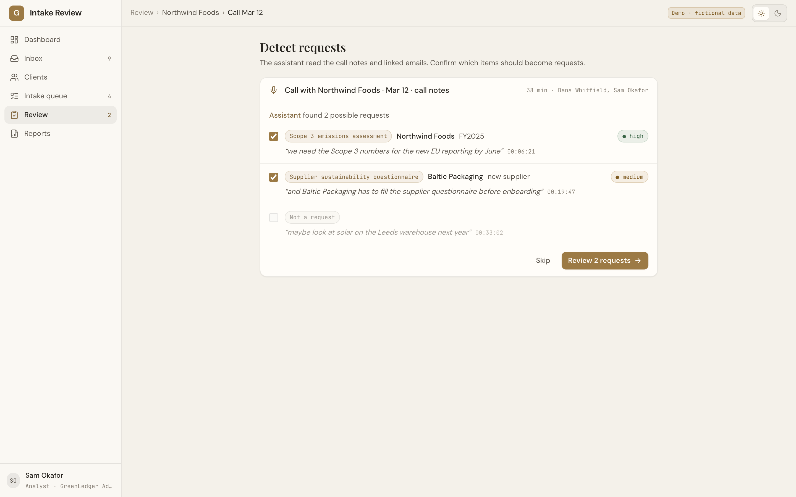
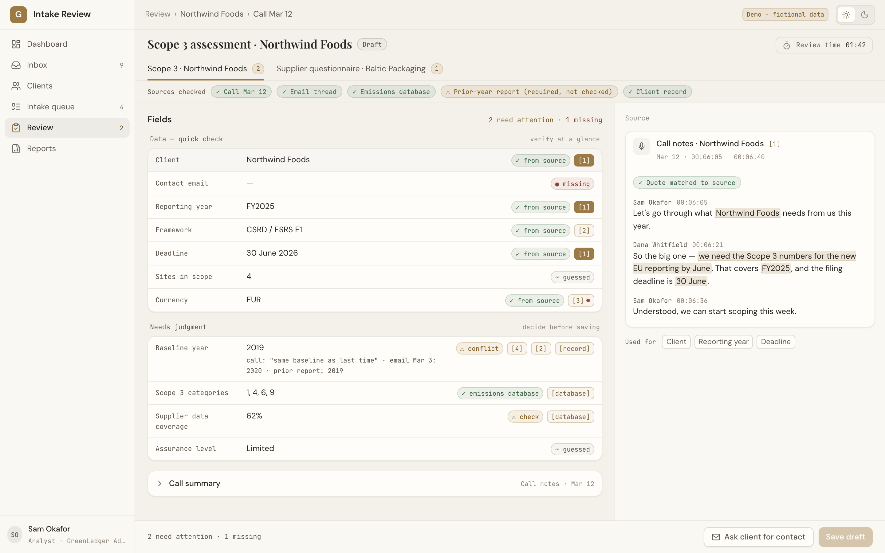
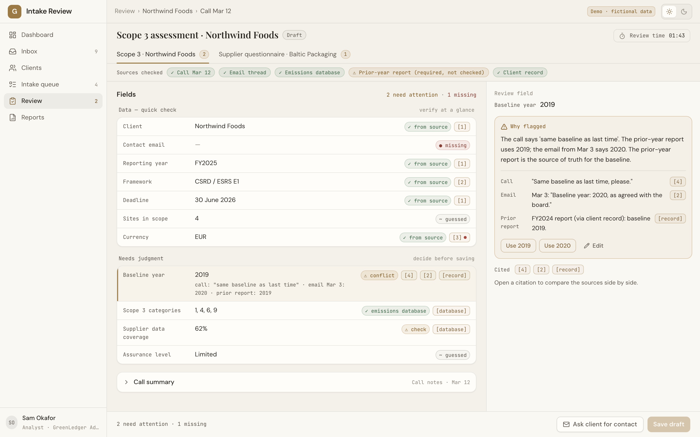
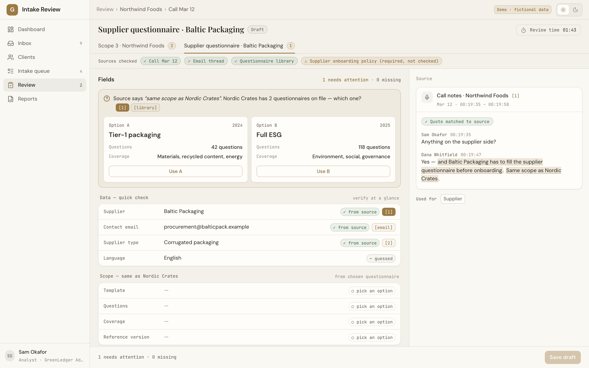

A client asks for three things in one call. One more detail comes by email two days later.
A coordinator reads the notes and types a request. Years, scopes and names are copied by hand.
“Same baseline as last time” becomes a guess. A wrong year is found weeks later.
The analyst opens the request and starts by searching email and old reports to understand what was really asked.
Emails, call notes, transcripts. The same sources the team reads today.
Each field of the request form, in the format the team already uses.
Every value links to the exact words it came from. Guesses are marked as guesses.
Nothing is saved until an analyst looks at it and clicks confirm.
One thread can hold zero, one or many requests.
Each value comes with the exact words it was taken from.
Compares each value with sources the team already trusts.
One screen: fields, sources, checks.




Each field links to the exact words, email or record it came from. A value with no source is marked as a guess.
The quote must exist in the source exactly as shown. A made-up or changed quote is flagged and the value is not trusted.
When two sources disagree, the request cannot be saved until a person picks one. No silent default.
No email, no questionnaire, no record goes out on its own. The assistant prepares; a person clicks.
The assistant has no write access to your systems. It drafts a request and waits for a decision.
Before use, it is run on past requests where the right answer is already known. On those, it filled the fields it could see correctly most of the time and invented nothing.
Email, call notes or transcripts, and the databases you already trust (emissions data, prior reports, client records). Read-only access is enough.
Which fields a Scope 3 assessment needs, which a supplier questionnaire needs, and which sources count as truth for each.
Replay old conversations where the final request is known. Count what was filled right, what was guessed, what was missed.
A few analysts use the review screen for real work. The old way stays available next to it.
Add request types and sources one at a time, each measured the same way.
Happy to walk through the review screen with your team and pick a first request type together.
Three or four past conversations with the request that came out of them. That is enough for a first measurement.
Concept · Oct 2026